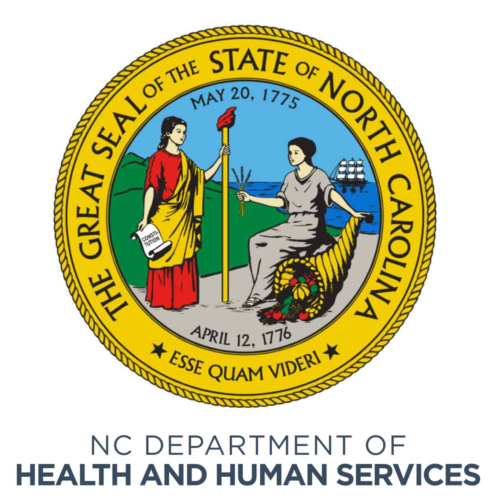

I'm an Infrastructure Engineer and Technical Leader with more than 20 years of experience designing, administering, and supporting enterprise technology environments across higher education and North Carolina state government.
My experience includes Windows Server, Active Directory, VMware, AWS WorkSpaces, Power BI, SQL development, infrastructure automation, cybersecurity technologies, enterprise monitoring, and mission-critical application support.
Throughout my career I have led infrastructure modernization efforts, developed enterprise reporting solutions, automated operational processes through scripting, and supported large-scale platforms serving thousands of users.
Outside of work, I operate an Arch Linux Tier 2 mirror, maintain a homelab environment, participate in the Citizen Weather Observer Program, enjoy photography and music production, and continually explore new technologies through hands-on learning.
Bachelor of Science in Business Management
Concentration: Information Technology
Graduated May 2005

Progressed through multiple technical and leadership roles including Electronics Specialist, System Administrator, IT Team Lead, IT Manager - Interim, Application Support Engineer Team Lead, and IT Systems Programmer Senior.
Windows Server • Active Directory • Group Policy • VMware • AWS WorkSpaces
Power BI • SQL Server • MySQL • Azure • Dynamics 365 • ETL Development
Docker • Kubernetes • Ansible • Puppet • Foreman
Fortigate • Zscaler • Veeam • HYCU
Nagios • Zabbix • PRTG • CheckMK